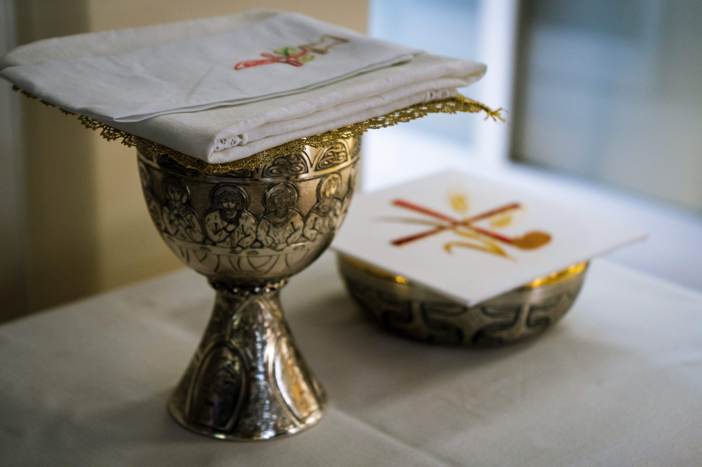

O Agnus Dei é um espaço dedicado à fé católica, onde você pode encontrar orações, histórias bíblicas e inspiração espiritual para fortalecer sua jornada de fé.

"Porque Deus amou o mundo de tal maneira que deu o seu Filho unigênito, para que todo aquele que nele crê não pereça, mas tenha a vida eterna." - João 3:16